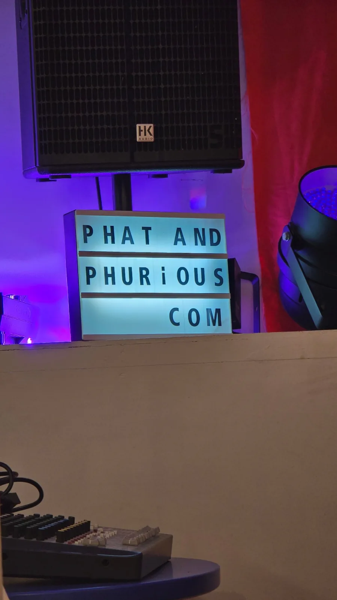
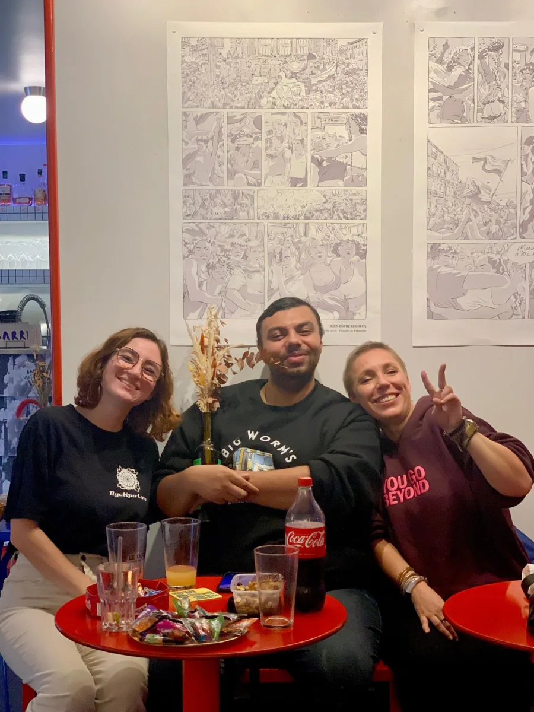
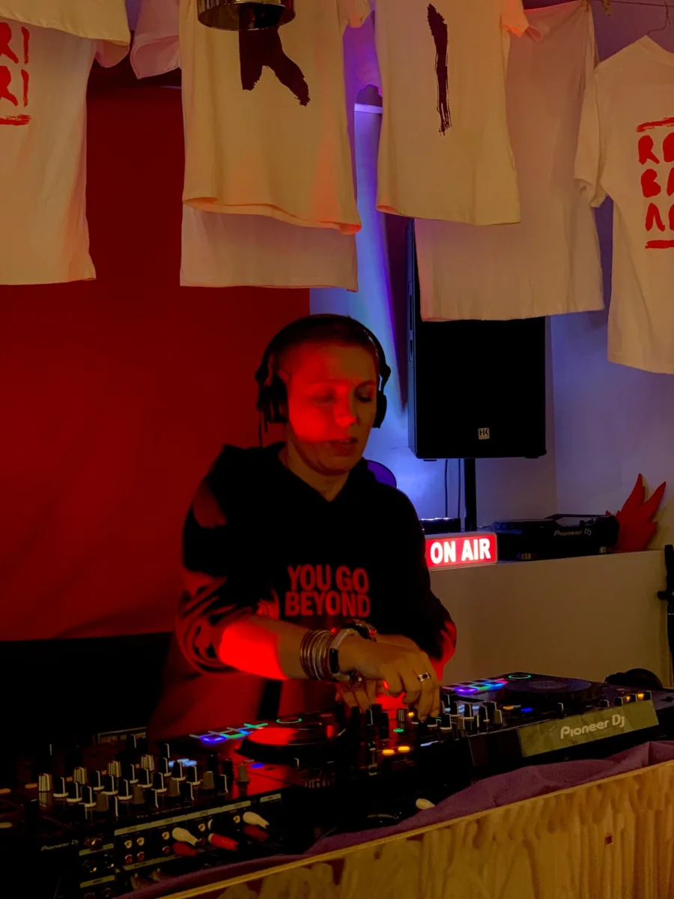
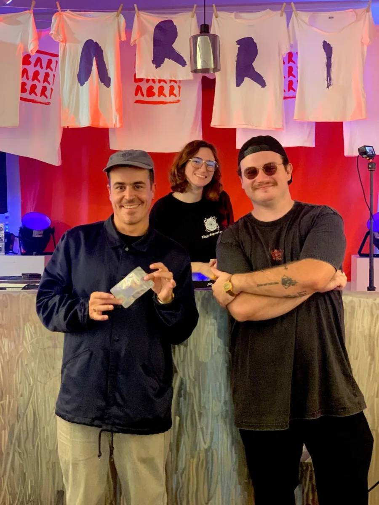
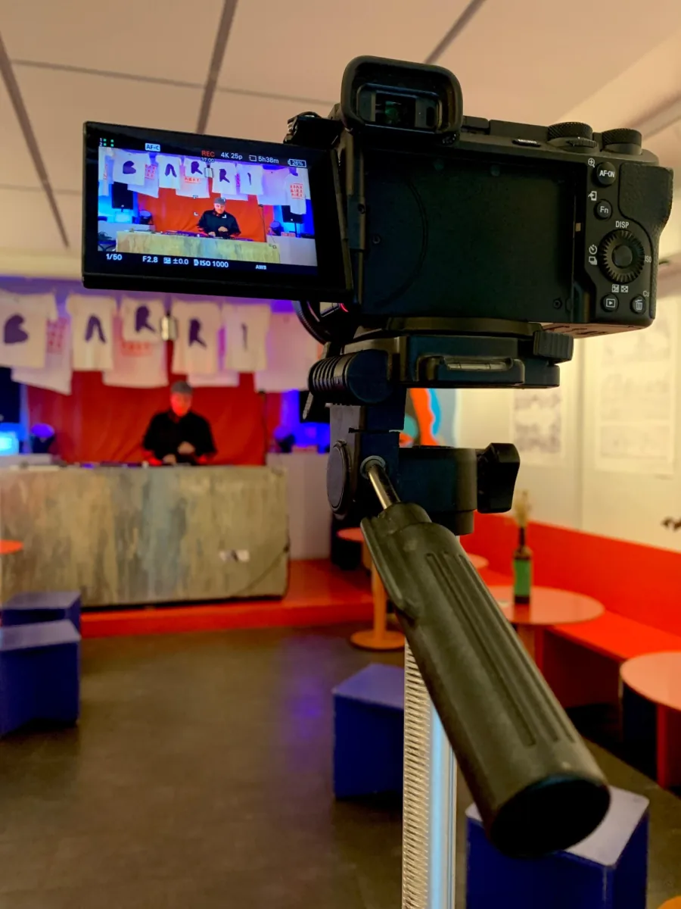
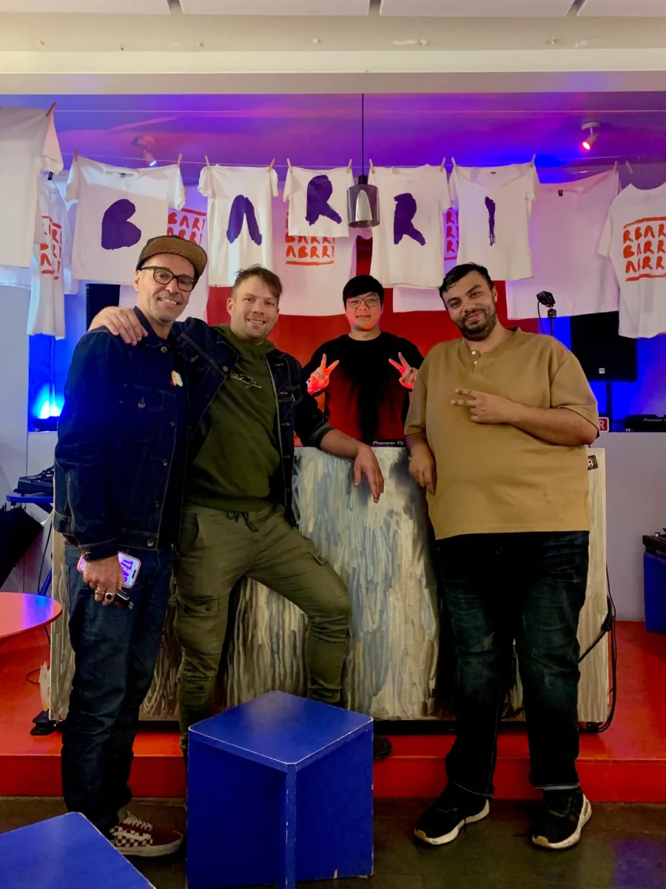
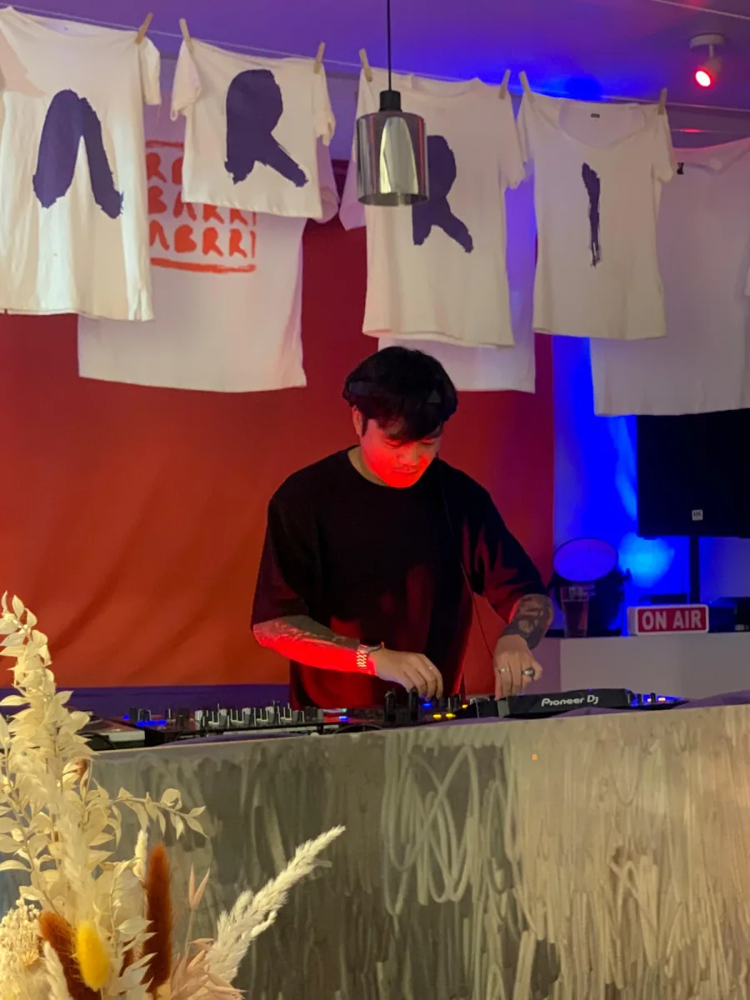

Le set de clôture, premier des six à sortir. Les cinq autres suivent dans les prochaines semaines.
6 sets
filmés dans la journée
6 heures
de 13h à 19h
3 caméras
une captation, zéro régie
Sortir de la chambre
Depuis février, le principe tient en une phrase : un artiste, une heure, deux caméras, dans une chambre à Montpellier. Sept épisodes à ce jour, sept sélections, des basses accrochées au mur et des LEDs réglées selon l'humeur du guest. Le format fonctionne justement parce qu'il est petit, et qu'on y entend respirer le mec derrière les platines.
Le 3 octobre, on a tout démonté pour aller le remonter ailleurs. Direction Le Barri, bar de quartier montpelliérain, pour une après-midi complète. Cinq des artistes déjà passés dans l'émission ont répondu présent, plus le set maison en clôture. Pas de billetterie, pas de liste, pas d'invitation à quémander : tu pousses la porte, c'est tout.


L'enseigne maison et la salle du Barri - PnP x Le Barri, 3 octobre 2026 · Photos : Phat & Phurious FM
L'ordre de passage
Onyx ouvre à treize heures, ce qui revient à lancer du liquid drum and bass à l'heure du café. Son rôle était ingrat, il l'a joué comme une mise en température, pads larges et breaks ronds, de quoi installer la salle sans la brusquer. Klemson enchaîne et monte le niveau d'un cran avec son UK garage charpenté, celui qui pousse au hard bounce dès qu'on lui laisse de la place.
brbr_coeur ferme la première moitié sur du breakbeat qui refuse de se ranger et du halfstep qui ralentit la grille sans lâcher le tempo. Trente minutes de pause ensuite, le temps de laisser souffler le matos et de remplir les verres. Au retour, Nyctipolos remet du dubstep dans la pièce, puis Ymka déroule une heure de bass house et de speed garage qui fait définitivement basculer l'après-midi du côté club.


Derrière et devant les platines - PnP x Le Barri, 3 octobre 2026 · Photos : Phat & Phurious FM
Un orage dehors, une caméra qui chauffe dedans
Deux accrocs à signaler, parce qu'un report sans accroc est un report qui ment. Le premier est tombé du ciel : un gros orage sur Montpellier en plein après-midi, du genre à décourager quiconque hésitait encore à sortir. Le second était interne. La caméra principale a chauffé au bout de quelques heures de 4K en continu, ce qui arrive quand on demande à un boîtier photo de se comporter comme une régie.
Rien de cassé, rien de perdu. Les six sets sont dans la boîte, le son est propre, et le reste de la journée s'est déroulé exactement comme prévu sur le papier. Pour une première sortie du format, on signait les yeux fermés.

Une des trois caméras, en 4K et en continu - PnP x Le Barri · Photo : Phat & Phurious FM
Le Barri, l'autre moitié du projet
Un bar qui accepte de bloquer son après-midi, de couper sa programmation et de laisser une équipe installer trois pieds de caméra au milieu de sa salle, ça ne se trouve pas en claquant des doigts. Le Barri, c'est la famille. Le staff a été bienveillant du début à la fin, toujours aux petits soins, sans jamais regarder la montre par-dessus notre épaule.
Mention spéciale à Pierrot, l'un des associés et gérants du bar, pour la confiance accordée sur un projet qui n'avait encore jamais quitté une chambre. Le décor du lieu a fait le reste : des t-shirts peints à la main suspendus à une corde à linge, lettre par lettre, B A R R I, et un fond rouge qui tombait parfaitement sous les LEDs.
Merci aux six DJs d'avoir bloqué leur samedi pour venir jouer devant des caméras, à Lolita pour les photos et l'enseigne lumineuse, et à Alex Chazel, le frérot d'amour toujours disponible quand il faut porter, brancher ou tenir quelque chose. Merci surtout à celles et ceux qui ont poussé la porte ce jour-là : une captation sans personne en face, ça ne ressemble à rien.
Ce qui arrive maintenant
Le set de clôture est en ligne depuis aujourd'hui, et c'est le premier des six. Les cinq autres sortiront au fur et à mesure sur la chaîne, pas forcément dans l'ordre de passage de la journée : chacun arrive quand son montage est prêt, les dates restent à annoncer. Le plus simple pour ne rien rater reste de s'abonner.
Une chose est actée : le format sait sortir de la chambre. Reste à savoir où il va la prochaine fois.


La bande et le set de clôture - PnP x Le Barri, 3 octobre 2026 · Photos : Phat & Phurious FM
Guest Mix
Phat — Live au Barri
59 minutes, une prise, bass house et UK garage
La série
Les cinq autres sets du Barri
Onyx, Klemson, brbr_coeur, Nyctipolos, Ymka · dates à venir
Rédaction, captation, montage et étalonnage : Phat. Reportage photo : Phat & Phurious FM et Lolita. Merci au Barri et à Pierrot pour l'accueil et la confiance, et à Alex Chazel pour le coup de main du début à la fin.
Le Barri, Montpellier · Instagram